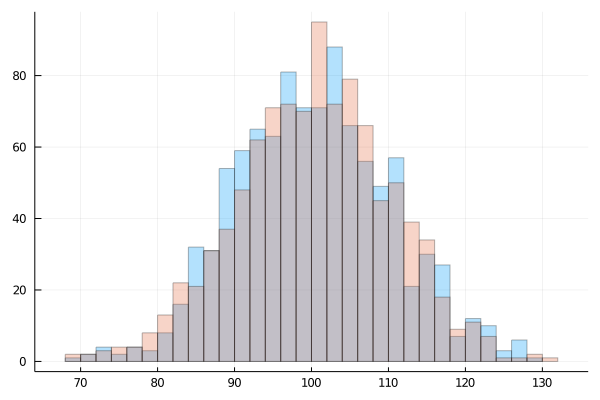
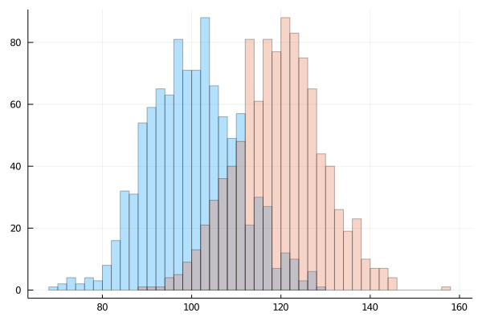
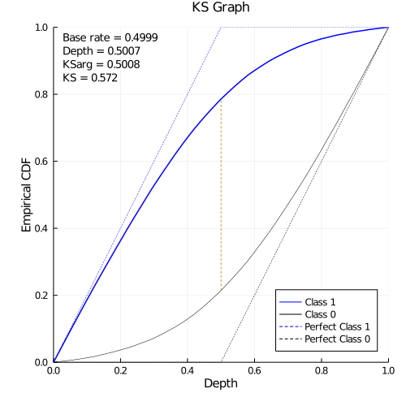
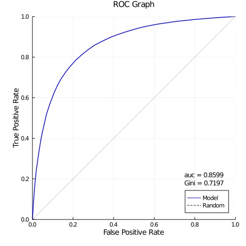
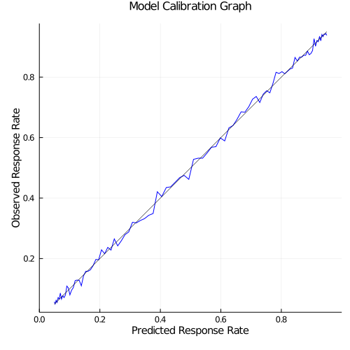
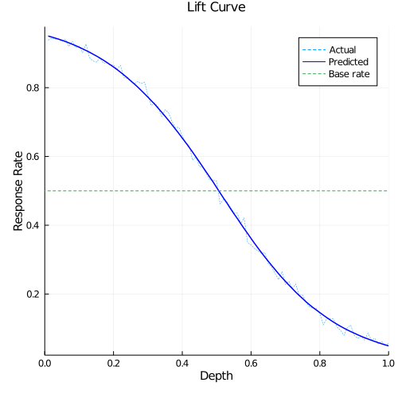
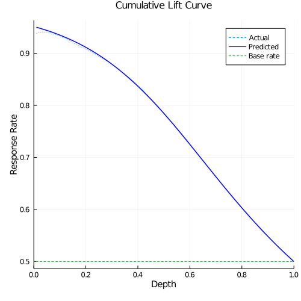

Binary classifier performance evaluation
Whether you are building a binary classifier or need to audit one built by someone else, there are many things we'd like to know about its performance. The following sections describe functions that are designed to let you easily get at commonly used binary classifier performance diagnostic metrics.
The functions are relatively performant and are capable of handling millions of rows of data.
kstest
The two sample Kolmogorov-Smirnov test is a statistical test of whether two empirical distributions are the same. The test is based on finding the maximum separation between the two cumulative distribution functions (CDF) and determining the p-value of the test statistic.
For binary classifiers, the predicted probabilities of the two classes should be different, thus the interest isn't whether the probability distributions are different, rather, it is how large is the maximal separation and where does it occur.
Let's generate some data to illustrate the idea.
using Random, Distributions, Plots
Random.seed!(123)
ENV["GKSwstype"] = "nul" # running headless
n100 = rand(Normal(100, 10), 1000)
n100a = rand(Normal(100, 10), 1000)
n120 = rand(Normal(120, 10), 1000)
n140 = rand(Normal(140, 10), 1000)
histogram(n100, nbins = 50, opacity= 0.3)
histogram!(n100a, nbins = 50, opacity= 0.3, legend = nothing)
We can use the kstest function to find the maximum separation and its location. The required input is a vector designating the two classes and another vector of the values, this is the typical data structure of model scoring on development or validation data.
using DSUtils
cls = [fill(0, length(n100)); fill(1, length(n100a))]
values = [n100; n100a]
kstest(cls, values)(n = 2000, n1 = 1000, n0 = 1000, baserate = 0.5, ks = 0.03400000000000003, ksarg = 93.43534653113403, ksdep = 0.746)
kstest returns results in a named tuple:
n, total number of observationsn1, total number of observations in class 1n0, total number of observations in class 0baserate, n1 / n, the incidence rate of class 1ks, the maximum separation between CDF1 and CDF0, a value between [0, 1]ksarg, argmax, the value where maximum separation is achievedksdep, depth of argmax in the sorted values (default sort is from high to low)
ks of 0 means the distributions are indistinguishable, ks of 1 says the two distributions are complete separable. These two distributions have negligible separation since they are drawn from the same distribution.
We now test on moderate separation:
histogram(n100, nbins = 50, opacity= 0.3)
histogram!(n120, nbins = 50, opacity= 0.3, legend = nothing)
cls = [fill(0, length(n100)); fill(1, length(n120))]
values = [n100; n120]
kstest(cls, values)(n = 2000, n1 = 1000, n0 = 1000, baserate = 0.5, ks = 0.6779999999999999, ksarg = 110.85777553733867, ksdep = 0.485)
There's considerable separation between the classes, and ks is larger than before.
Let's test on widely separately data:
histogram(n100, nbins = 50, opacity= 0.3)
histogram!(n140, nbins = 50, opacity= 0.3, legend = nothing)cls = [fill(0, length(n100)); fill(1, length(n140))]
values = [n100; n140]
kstest(cls, values)(n = 2000, n1 = 1000, n0 = 1000, baserate = 0.5, ks = 0.949, ksarg = 121.57678388253254, ksdep = 0.4955)
We can see that the two classes are nearly separable and ks is now quite high at 0.949. These examples illustrate how ks can serve as an indicator of the ability to separate the two classes.
auroc
A good binary classifier would have high sensitivity (able to recognize True Positive) and high specificity (able to recognize True Negatives, hence have low False Positive). A plot of the trade-off curve of True Positive Rate versus False Positive Rate at various cutoff probabilities is called the Receiver Operating Characteristics (ROC) curve. One way to quantify performance is by the area under the ROC curve, often abbreviated as AUC or C, many packages would compute AUC via numeric integration of the ROC curve. AUC is in the range [0, 1], a perfect model has AUC of 1, a random model has AUC of 0.5, and a perfectly backwards model would have AUC of -1.
There is another interpretation of AUC which provides more intuition than simply as the area under a curve. If we make all possible pair-wise comparisons between the probabilities of class 1 with class 0, we can count the incidences of:
- Concordant: class 1 probability > class 0 probability
- Tied: class 1 probability ≈ class 0 probability
- Discordant: class 1 probability < class 0 probability
Then we can compute:
- AUC: (Concordant + 0.5 Tied) / (N1 * N0)
- Gini: 2AUC - 1, or (Concordant - Discordant) / (N1 * N0)
- Goodman-Kruskal Gamma: (Concordant - Discordant) / (Concordant + Discordant), no penalty for Tied
- Kendall's Tau: (Concordant - Discordant) / (0.5 * (N1+N0) * (N1+N0-1))
We can interpret AUC as the percentage of time class 1 probabilities is larger than class 0 probabilities (ignoring ties).
The mathematical proof can be found at Stack Exchange and Professor David J. Hand's article.
cls = [fill(0, length(n100)); fill(1, length(n140))]
values = [n100; n140]
auroc(cls, values)(conc = 997398, tied = 0, disc = 2602, auc = 0.997398, gini = 0.994796)
auroc returns results in a named tuple:
conc, number of concordant comparisonstied, number of tied comparisonsdisc, number of discordant comparisonsauc, area under ROC curve, or just area under curvegini, 2auc - 1
bcdiag
While kstest and auroc provide diagnostic measures for comparing model performance, when there is a model of interest, it is likely that we need to produce many graphs and table to understand and document its performance, bcdiag allows us to do this easily.
using Random
using GLM
using DSUtils
function logitgen(intercept::Real, slope::Real, len::Int; seed = 888)
Random.seed!(seed)
x = 10 .* rand(len) # random uniform [0, 10)
# sort!(x) # x ascending
logit = @. intercept + slope * x # logit(prob) = ln(p / (1 + p)) = linear equation
prob = @. 1. / (1. + exp(-logit)) # probability
y = rand(len) .<= prob
y, x
end
m = DataFrame(logitgen(-3, 0.6, 100_000), (:target, :x))
m_logistic = glm(@formula(target ~ x), m, Binomial(), LogitLink())
m.pred = predict(m_logistic)
kstest(m.target, m.pred)(n = 100000, n1 = 49994, n0 = 50006, baserate = 0.49994, ks = 0.5720001714368025, ksarg = 0.500818560199364, ksdep = 0.50068)
auroc(m.target, m.pred)(conc = 2149668685, tied = 3448, disc = 350327831, auc = 0.8598681759821017, gini = 0.7197363519642035)
Running bcdiag prints a quick summary:
mdiag = bcdiag(m.target, m.pred)Base rate: 0.4999 n: 100000 n1: 49994 n0: 50006 ks: 0.572 occurs at value of 0.500818560199364 depth of 0.50068 auroc: 0.8599 concordant: 2149668685 tied: 3448 discordant: 350327831 Gini: 0.7197
The output structure allows us to create the following plots and tables to understand:
- the ability of the model to separate the two classes
- the accuracy of the probability point estimates
- how to set cutoff for maximum accuracy
- performance of the model at varying cutoff depth
ksplot
ksplot plots the cumulative distribution of class 1 (true positive rate) and class 0 (false positive rate) versus depth.
ksplot(mdiag)It shows where the maximum separation of the two distributions occur.

rocplot
rocplot plots the true positive rate vs. false positive rate (depth is implicit).
rocplot(mdiag)A perfect model has auc of 1, a random model has auc of 0.5.

biasplot
Both ksplot and rocplot rely on the ability of the model to rank order the observations, the score value itself doesn't matter. For example, if you took the score and perform any monotonic transform, ks and auc wouldn't change. There are occasions where the score value does matter, where the probabilities need to be accurate, for example, in expected return calculations. Thus, we need to understand whether the probabilities are accurate, biasplot does this by plotting the observed response rate versus predicted response rate to look for systemic bias. This is also called the calibration graph.
biasplot(mdiag)
An unbiased model would lie on the diagnonal, systemic shift off the diagonal represents over or under estimate of the true probability.
accuracyplot
People often refer to (TP + TN) / N as accuracy of the model, that is, the ability to correctly identify correct cases. It is used to compare model performance as well - model with higher accuracy is a better model. For a probability based classifier, a cutoff is required to turn probability to predicted class. So, what is the cutoff value to use to achieve maximum accuracy?
There are many approaches to setting the best cutoff, one way is to assign utility values to the four outcomes of [TP, FP, FN, TN] and maximize the sum across different cutoff's. Accuracy measure uses the utility values of [1, 0, 0, 1] giving TP + TN. You can assign negative penalty terms for misclassification as well.
Note that this is different from kstest - maximum separation on cumulative distribution (normalized to 100%) does not account for class size difference, e.g., class 1 may be only 2% of the cases.
accuracyplot(mdiag)
liftcurve
liftcurve plots the actual response and predicted response versus depth, with baserate as 1.
liftcurve(mdiag)We can easily see where the model is performing better than average, approximately the same as average, or below average.

cumliftcurve
cumliftcurve is similar to liftcurve, the difference is it is a plot of cumulative response rate from the top of the model.
cumliftcurve(mdiag)
liftable
liftable is the table from which liftcurve is plotted.
liftable(mdiag)| grp | depth | count | cntObs | cntPrd | rrObs | rrPred | liftObs | liftPrd | |
|---|---|---|---|---|---|---|---|---|---|
| Int32 | Float64 | Int64 | Int64 | Float64 | Float64 | Float64 | Float64 | Float64 | |
| 1 | 0 | 0.01 | 1000 | 938 | 950.244 | 0.938 | 0.950244 | 1.87623 | 1.90072 |
| 2 | 1 | 0.02 | 1000 | 944 | 947.375 | 0.944 | 0.947375 | 1.88823 | 1.89498 |
| 3 | 2 | 0.03 | 1000 | 941 | 944.28 | 0.941 | 0.94428 | 1.88223 | 1.88879 |
| 4 | 3 | 0.04 | 1000 | 942 | 941.184 | 0.942 | 0.941184 | 1.88423 | 1.88259 |
| 5 | 4 | 0.05 | 1000 | 934 | 937.859 | 0.934 | 0.937859 | 1.86822 | 1.87594 |
| 6 | 5 | 0.06 | 1000 | 941 | 934.302 | 0.941 | 0.934302 | 1.88223 | 1.86883 |
| 7 | 6 | 0.07 | 1000 | 920 | 930.435 | 0.92 | 0.930435 | 1.84022 | 1.86109 |
| 8 | 7 | 0.08 | 1000 | 935 | 926.417 | 0.935 | 0.926417 | 1.87022 | 1.85306 |
| 9 | 8 | 0.09 | 1000 | 917 | 922.172 | 0.917 | 0.922172 | 1.83422 | 1.84457 |
| 10 | 9 | 0.1 | 1000 | 921 | 917.7 | 0.921 | 0.9177 | 1.84222 | 1.83562 |
| 11 | 10 | 0.11 | 1000 | 902 | 913.038 | 0.902 | 0.913038 | 1.80422 | 1.82629 |
| 12 | 11 | 0.12 | 1000 | 927 | 908.191 | 0.927 | 0.908191 | 1.85422 | 1.8166 |
| 13 | 12 | 0.13 | 1000 | 888 | 903.262 | 0.888 | 0.903262 | 1.77621 | 1.80674 |
| 14 | 13 | 0.14 | 1000 | 878 | 897.721 | 0.878 | 0.897721 | 1.75621 | 1.79566 |
| 15 | 14 | 0.15 | 1000 | 874 | 892.254 | 0.874 | 0.892254 | 1.74821 | 1.78472 |
| 16 | 15 | 0.16 | 1000 | 886 | 886.475 | 0.886 | 0.886475 | 1.77221 | 1.77316 |
| 17 | 16 | 0.17 | 1000 | 872 | 880.356 | 0.872 | 0.880356 | 1.74421 | 1.76092 |
| 18 | 17 | 0.18 | 1000 | 872 | 873.856 | 0.872 | 0.873856 | 1.74421 | 1.74792 |
| 19 | 18 | 0.19 | 1000 | 866 | 867.031 | 0.866 | 0.867031 | 1.73221 | 1.73427 |
| 20 | 19 | 0.2 | 1000 | 866 | 860.157 | 0.866 | 0.860157 | 1.73221 | 1.72052 |
| 21 | 20 | 0.21 | 1000 | 853 | 852.902 | 0.853 | 0.852902 | 1.7062 | 1.70601 |
| 22 | 21 | 0.22 | 1000 | 865 | 845.208 | 0.865 | 0.845208 | 1.73021 | 1.69062 |
| 23 | 22 | 0.23 | 1000 | 830 | 837.075 | 0.83 | 0.837075 | 1.6602 | 1.67435 |
| 24 | 23 | 0.24 | 1000 | 827 | 828.989 | 0.827 | 0.828989 | 1.6542 | 1.65818 |
| 25 | 24 | 0.25 | 1000 | 819 | 819.982 | 0.819 | 0.819982 | 1.6382 | 1.64016 |
| 26 | 25 | 0.26 | 1000 | 811 | 811.242 | 0.811 | 0.811242 | 1.62219 | 1.62268 |
| 27 | 26 | 0.27 | 1000 | 818 | 802.232 | 0.818 | 0.802232 | 1.6362 | 1.60466 |
| 28 | 27 | 0.28 | 1000 | 812 | 792.447 | 0.812 | 0.792447 | 1.62419 | 1.58508 |
| 29 | 28 | 0.29 | 1000 | 816 | 782.55 | 0.816 | 0.78255 | 1.6322 | 1.56529 |
| 30 | 29 | 0.3 | 1000 | 780 | 772.521 | 0.78 | 0.772521 | 1.56019 | 1.54523 |
| 31 | 30 | 0.31 | 1000 | 748 | 762.009 | 0.748 | 0.762009 | 1.49618 | 1.5242 |
| 32 | 31 | 0.32 | 1000 | 755 | 751.665 | 0.755 | 0.751665 | 1.51018 | 1.50351 |
| 33 | 32 | 0.33 | 1000 | 744 | 740.3 | 0.744 | 0.7403 | 1.48818 | 1.48078 |
| 34 | 33 | 0.34 | 1000 | 716 | 728.73 | 0.716 | 0.72873 | 1.43217 | 1.45763 |
| 35 | 34 | 0.35 | 1000 | 736 | 717.027 | 0.736 | 0.717027 | 1.47218 | 1.43423 |
| 36 | 35 | 0.36 | 1000 | 727 | 704.875 | 0.727 | 0.704875 | 1.45417 | 1.40992 |
| 37 | 36 | 0.37 | 1000 | 702 | 692.275 | 0.702 | 0.692275 | 1.40417 | 1.38472 |
| 38 | 37 | 0.38 | 1000 | 684 | 679.519 | 0.684 | 0.679519 | 1.36816 | 1.3592 |
| 39 | 38 | 0.39 | 1000 | 685 | 666.849 | 0.685 | 0.666849 | 1.37016 | 1.33386 |
| 40 | 39 | 0.4 | 1000 | 660 | 653.322 | 0.66 | 0.653322 | 1.32016 | 1.3068 |
| 41 | 40 | 0.41 | 1000 | 640 | 640.206 | 0.64 | 0.640206 | 1.28015 | 1.28057 |
| 42 | 41 | 0.42 | 1000 | 632 | 626.581 | 0.632 | 0.626581 | 1.26415 | 1.25331 |
| 43 | 42 | 0.43 | 1000 | 589 | 612.667 | 0.589 | 0.612667 | 1.17814 | 1.22548 |
| 44 | 43 | 0.44 | 1000 | 599 | 598.175 | 0.599 | 0.598175 | 1.19814 | 1.19649 |
| 45 | 44 | 0.45 | 1000 | 570 | 583.725 | 0.57 | 0.583725 | 1.14014 | 1.16759 |
| 46 | 45 | 0.46 | 1000 | 568 | 568.84 | 0.568 | 0.56884 | 1.13614 | 1.13782 |
| 47 | 46 | 0.47 | 1000 | 549 | 554.306 | 0.549 | 0.554306 | 1.09813 | 1.10874 |
| 48 | 47 | 0.48 | 1000 | 532 | 539.763 | 0.532 | 0.539763 | 1.06413 | 1.07966 |
| 49 | 48 | 0.49 | 1000 | 532 | 525.189 | 0.532 | 0.525189 | 1.06413 | 1.0505 |
| 50 | 49 | 0.5 | 1000 | 528 | 509.639 | 0.528 | 0.509639 | 1.05613 | 1.0194 |
| 51 | 50 | 0.51 | 1000 | 462 | 494.059 | 0.462 | 0.494059 | 0.924111 | 0.988237 |
| 52 | 51 | 0.52 | 1000 | 475 | 478.695 | 0.475 | 0.478695 | 0.950114 | 0.957504 |
| 53 | 52 | 0.53 | 1000 | 468 | 464.32 | 0.468 | 0.46432 | 0.936112 | 0.928751 |
| 54 | 53 | 0.54 | 1000 | 452 | 448.63 | 0.452 | 0.44863 | 0.904108 | 0.897368 |
| 55 | 54 | 0.55 | 1000 | 437 | 433.713 | 0.437 | 0.433713 | 0.874105 | 0.86753 |
| 56 | 55 | 0.56 | 1000 | 435 | 419.679 | 0.435 | 0.419679 | 0.870104 | 0.839459 |
| 57 | 56 | 0.57 | 1000 | 405 | 404.588 | 0.405 | 0.404588 | 0.810097 | 0.809273 |
| 58 | 57 | 0.58 | 1000 | 421 | 389.964 | 0.421 | 0.389964 | 0.842101 | 0.780022 |
| 59 | 58 | 0.59 | 1000 | 349 | 375.986 | 0.349 | 0.375986 | 0.698084 | 0.752062 |
| 60 | 59 | 0.6 | 1000 | 343 | 361.479 | 0.343 | 0.361479 | 0.686082 | 0.723045 |
| 61 | 60 | 0.61 | 1000 | 332 | 347.477 | 0.332 | 0.347477 | 0.66408 | 0.695036 |
| 62 | 61 | 0.62 | 1000 | 326 | 334.006 | 0.326 | 0.334006 | 0.652078 | 0.668091 |
| 63 | 62 | 0.63 | 1000 | 318 | 320.724 | 0.318 | 0.320724 | 0.636076 | 0.641525 |
| 64 | 63 | 0.64 | 1000 | 320 | 307.767 | 0.32 | 0.307767 | 0.640077 | 0.615608 |
| 65 | 64 | 0.65 | 1000 | 288 | 295.319 | 0.288 | 0.295319 | 0.576069 | 0.59071 |
| 66 | 65 | 0.66 | 1000 | 279 | 283.022 | 0.279 | 0.283022 | 0.558067 | 0.566113 |
| 67 | 66 | 0.67 | 1000 | 259 | 271.001 | 0.259 | 0.271001 | 0.518062 | 0.542068 |
| 68 | 67 | 0.68 | 1000 | 242 | 258.936 | 0.242 | 0.258936 | 0.484058 | 0.517934 |
| 69 | 68 | 0.69 | 1000 | 265 | 247.616 | 0.265 | 0.247616 | 0.530064 | 0.495291 |
| 70 | 69 | 0.7 | 1000 | 228 | 236.813 | 0.228 | 0.236813 | 0.456055 | 0.473683 |
| 71 | 70 | 0.71 | 1000 | 237 | 226.088 | 0.237 | 0.226088 | 0.474057 | 0.45223 |
| 72 | 71 | 0.72 | 1000 | 216 | 215.781 | 0.216 | 0.215781 | 0.432052 | 0.431613 |
| 73 | 72 | 0.73 | 1000 | 229 | 205.435 | 0.229 | 0.205435 | 0.458055 | 0.41092 |
| 74 | 73 | 0.74 | 1000 | 196 | 195.832 | 0.196 | 0.195832 | 0.392047 | 0.39171 |
| 75 | 74 | 0.75 | 1000 | 197 | 186.68 | 0.197 | 0.18668 | 0.394047 | 0.373406 |
| 76 | 75 | 0.76 | 1000 | 176 | 177.251 | 0.176 | 0.177251 | 0.352042 | 0.354544 |
| 77 | 76 | 0.77 | 1000 | 163 | 168.808 | 0.163 | 0.168808 | 0.326039 | 0.337656 |
| 78 | 77 | 0.78 | 1000 | 158 | 160.798 | 0.158 | 0.160798 | 0.316038 | 0.321634 |
| 79 | 78 | 0.79 | 1000 | 158 | 153.411 | 0.158 | 0.153411 | 0.316038 | 0.306858 |
| 80 | 79 | 0.8 | 1000 | 143 | 145.95 | 0.143 | 0.14595 | 0.286034 | 0.291934 |
| 81 | 80 | 0.81 | 1000 | 110 | 138.641 | 0.11 | 0.138641 | 0.220026 | 0.277315 |
| 82 | 81 | 0.82 | 1000 | 128 | 131.666 | 0.128 | 0.131666 | 0.256031 | 0.263363 |
| 83 | 82 | 0.83 | 1000 | 129 | 124.722 | 0.129 | 0.124722 | 0.258031 | 0.249473 |
| 84 | 83 | 0.84 | 1000 | 127 | 118.222 | 0.127 | 0.118222 | 0.25403 | 0.236472 |
| 85 | 84 | 0.85 | 1000 | 104 | 112.144 | 0.104 | 0.112144 | 0.208025 | 0.224315 |
| 86 | 85 | 0.86 | 1000 | 95 | 106.288 | 0.095 | 0.106288 | 0.190023 | 0.212601 |
| 87 | 86 | 0.87 | 1000 | 80 | 100.882 | 0.08 | 0.100882 | 0.160019 | 0.201788 |
| 88 | 87 | 0.88 | 1000 | 103 | 95.6306 | 0.103 | 0.0956306 | 0.206025 | 0.191284 |
| 89 | 88 | 0.89 | 1000 | 109 | 90.7435 | 0.109 | 0.0907435 | 0.218026 | 0.181509 |
| 90 | 89 | 0.9 | 1000 | 80 | 86.19 | 0.08 | 0.08619 | 0.160019 | 0.172401 |
| 91 | 90 | 0.91 | 1000 | 71 | 81.5656 | 0.071 | 0.0815656 | 0.142017 | 0.163151 |
| 92 | 91 | 0.92 | 1000 | 77 | 77.2278 | 0.077 | 0.0772278 | 0.154018 | 0.154474 |
| 93 | 92 | 0.93 | 1000 | 66 | 73.0657 | 0.066 | 0.0730657 | 0.132016 | 0.146149 |
| 94 | 93 | 0.94 | 1000 | 86 | 69.2859 | 0.086 | 0.0692859 | 0.172021 | 0.138588 |
| 95 | 94 | 0.95 | 1000 | 66 | 65.577 | 0.066 | 0.065577 | 0.132016 | 0.13117 |
| 96 | 95 | 0.96 | 1000 | 71 | 61.9319 | 0.071 | 0.0619319 | 0.142017 | 0.123879 |
| 97 | 96 | 0.97 | 1000 | 55 | 58.5082 | 0.055 | 0.0585082 | 0.110013 | 0.11703 |
| 98 | 97 | 0.98 | 1000 | 62 | 55.2587 | 0.062 | 0.0552587 | 0.124015 | 0.110531 |
| 99 | 98 | 0.99 | 1000 | 50 | 52.1895 | 0.05 | 0.0521895 | 0.100012 | 0.104391 |
| 100 | 99 | 1.0 | 1000 | 57 | 49.3188 | 0.057 | 0.0493188 | 0.114014 | 0.0986494 |
cumliftable
cumliftable is the cumulative version of liftable.
cumliftable(mdiag)| grp | depth | count | cumObs | cumPrd | crObs | crPrd | liftObs | liftPrd | |
|---|---|---|---|---|---|---|---|---|---|
| Int32 | Float64 | Int64 | Int64 | Float64 | Float64 | Float64 | Float64 | Float64 | |
| 1 | 0 | 0.01 | 1000 | 938 | 950.244 | 0.938 | 0.950244 | 1.87623 | 1.90072 |
| 2 | 1 | 0.02 | 2000 | 1882 | 1897.62 | 0.941 | 0.948809 | 1.88223 | 1.89785 |
| 3 | 2 | 0.03 | 3000 | 2823 | 2841.9 | 0.941 | 0.947299 | 1.88223 | 1.89483 |
| 4 | 3 | 0.04 | 4000 | 3765 | 3783.08 | 0.94125 | 0.94577 | 1.88273 | 1.89177 |
| 5 | 4 | 0.05 | 5000 | 4699 | 4720.94 | 0.9398 | 0.944188 | 1.87983 | 1.8886 |
| 6 | 5 | 0.06 | 6000 | 5640 | 5655.24 | 0.94 | 0.942541 | 1.88023 | 1.88531 |
| 7 | 6 | 0.07 | 7000 | 6560 | 6585.68 | 0.937143 | 0.940811 | 1.87451 | 1.88185 |
| 8 | 7 | 0.08 | 8000 | 7495 | 7512.1 | 0.936875 | 0.939012 | 1.87397 | 1.87825 |
| 9 | 8 | 0.09 | 9000 | 8412 | 8434.27 | 0.934667 | 0.937141 | 1.86956 | 1.87451 |
| 10 | 9 | 0.1 | 10000 | 9333 | 9351.97 | 0.9333 | 0.935197 | 1.86682 | 1.87062 |
| 11 | 10 | 0.11 | 11000 | 10235 | 10265.0 | 0.930455 | 0.933182 | 1.86113 | 1.86659 |
| 12 | 11 | 0.12 | 12000 | 11162 | 11173.2 | 0.930167 | 0.9311 | 1.86056 | 1.86242 |
| 13 | 12 | 0.13 | 13000 | 12050 | 12076.5 | 0.926923 | 0.928958 | 1.85407 | 1.85814 |
| 14 | 13 | 0.14 | 14000 | 12928 | 12974.2 | 0.923429 | 0.926727 | 1.84708 | 1.85368 |
| 15 | 14 | 0.15 | 15000 | 13802 | 13866.4 | 0.920133 | 0.924429 | 1.84049 | 1.84908 |
| 16 | 15 | 0.16 | 16000 | 14688 | 14752.9 | 0.918 | 0.922057 | 1.83622 | 1.84433 |
| 17 | 16 | 0.17 | 17000 | 15560 | 15633.3 | 0.915294 | 0.919604 | 1.83081 | 1.83943 |
| 18 | 17 | 0.18 | 18000 | 16432 | 16507.1 | 0.912889 | 0.917062 | 1.826 | 1.83434 |
| 19 | 18 | 0.19 | 19000 | 17298 | 17374.2 | 0.910421 | 0.914429 | 1.82106 | 1.82908 |
| 20 | 19 | 0.2 | 20000 | 18164 | 18234.3 | 0.9082 | 0.911715 | 1.81662 | 1.82365 |
| 21 | 20 | 0.21 | 21000 | 19017 | 19087.2 | 0.905571 | 0.908915 | 1.81136 | 1.81805 |
| 22 | 21 | 0.22 | 22000 | 19882 | 19932.4 | 0.903727 | 0.906019 | 1.80767 | 1.81226 |
| 23 | 22 | 0.23 | 23000 | 20712 | 20769.5 | 0.900522 | 0.903022 | 1.80126 | 1.80626 |
| 24 | 23 | 0.24 | 24000 | 21539 | 21598.5 | 0.897458 | 0.899937 | 1.79513 | 1.80009 |
| 25 | 24 | 0.25 | 25000 | 22358 | 22418.5 | 0.89432 | 0.896739 | 1.78885 | 1.79369 |
| 26 | 25 | 0.26 | 26000 | 23169 | 23229.7 | 0.891115 | 0.89345 | 1.78244 | 1.78712 |
| 27 | 26 | 0.27 | 27000 | 23987 | 24031.9 | 0.888407 | 0.890072 | 1.77703 | 1.78036 |
| 28 | 27 | 0.28 | 28000 | 24799 | 24824.4 | 0.885679 | 0.886585 | 1.77157 | 1.77338 |
| 29 | 28 | 0.29 | 29000 | 25615 | 25606.9 | 0.883276 | 0.882998 | 1.76676 | 1.76621 |
| 30 | 29 | 0.3 | 30000 | 26395 | 26379.5 | 0.879833 | 0.879315 | 1.75988 | 1.75884 |
| 31 | 30 | 0.31 | 31000 | 27143 | 27141.5 | 0.875581 | 0.875531 | 1.75137 | 1.75127 |
| 32 | 31 | 0.32 | 32000 | 27898 | 27893.1 | 0.871812 | 0.87166 | 1.74383 | 1.74353 |
| 33 | 32 | 0.33 | 33000 | 28642 | 28633.4 | 0.867939 | 0.86768 | 1.73609 | 1.73557 |
| 34 | 33 | 0.34 | 34000 | 29358 | 29362.2 | 0.863471 | 0.863593 | 1.72715 | 1.72739 |
| 35 | 34 | 0.35 | 35000 | 30094 | 30079.2 | 0.859829 | 0.859405 | 1.71986 | 1.71902 |
| 36 | 35 | 0.36 | 36000 | 30821 | 30784.1 | 0.856139 | 0.855113 | 1.71248 | 1.71043 |
| 37 | 36 | 0.37 | 37000 | 31523 | 31476.3 | 0.851973 | 0.850712 | 1.70415 | 1.70163 |
| 38 | 37 | 0.38 | 38000 | 32207 | 32155.9 | 0.847553 | 0.846207 | 1.69531 | 1.69262 |
| 39 | 38 | 0.39 | 39000 | 32892 | 32822.7 | 0.843385 | 0.841608 | 1.68697 | 1.68342 |
| 40 | 39 | 0.4 | 40000 | 33552 | 33476.0 | 0.8388 | 0.836901 | 1.6778 | 1.674 |
| 41 | 40 | 0.41 | 41000 | 34192 | 34116.2 | 0.833951 | 0.832103 | 1.6681 | 1.66441 |
| 42 | 41 | 0.42 | 42000 | 34824 | 34742.8 | 0.829143 | 0.82721 | 1.65848 | 1.65462 |
| 43 | 42 | 0.43 | 43000 | 35413 | 35355.5 | 0.823558 | 0.822221 | 1.64731 | 1.64464 |
| 44 | 43 | 0.44 | 44000 | 36012 | 35953.7 | 0.818455 | 0.817129 | 1.63711 | 1.63445 |
| 45 | 44 | 0.45 | 45000 | 36582 | 36537.4 | 0.812933 | 0.811942 | 1.62606 | 1.62408 |
| 46 | 45 | 0.46 | 46000 | 37150 | 37106.2 | 0.807609 | 0.806657 | 1.61541 | 1.61351 |
| 47 | 46 | 0.47 | 47000 | 37699 | 37660.5 | 0.802106 | 0.801288 | 1.60441 | 1.60277 |
| 48 | 47 | 0.48 | 48000 | 38231 | 38200.3 | 0.796479 | 0.795839 | 1.59315 | 1.59187 |
| 49 | 48 | 0.49 | 49000 | 38763 | 38725.5 | 0.791082 | 0.790316 | 1.58235 | 1.58082 |
| 50 | 49 | 0.5 | 50000 | 39291 | 39235.1 | 0.78582 | 0.784702 | 1.57183 | 1.56959 |
| 51 | 50 | 0.51 | 51000 | 39753 | 39729.2 | 0.779471 | 0.779003 | 1.55913 | 1.55819 |
| 52 | 51 | 0.52 | 52000 | 40228 | 40207.9 | 0.773615 | 0.773228 | 1.54742 | 1.54664 |
| 53 | 52 | 0.53 | 53000 | 40696 | 40672.2 | 0.767849 | 0.7674 | 1.53588 | 1.53498 |
| 54 | 53 | 0.54 | 54000 | 41148 | 41120.8 | 0.762 | 0.761497 | 1.52418 | 1.52318 |
| 55 | 54 | 0.55 | 55000 | 41585 | 41554.5 | 0.756091 | 0.755537 | 1.51236 | 1.51126 |
| 56 | 55 | 0.56 | 56000 | 42020 | 41974.2 | 0.750357 | 0.74954 | 1.50089 | 1.49926 |
| 57 | 56 | 0.57 | 57000 | 42425 | 42378.8 | 0.744298 | 0.743488 | 1.48878 | 1.48715 |
| 58 | 57 | 0.58 | 58000 | 42846 | 42768.8 | 0.738724 | 0.737393 | 1.47763 | 1.47496 |
| 59 | 58 | 0.59 | 59000 | 43195 | 43144.8 | 0.732119 | 0.731267 | 1.46441 | 1.46271 |
| 60 | 59 | 0.6 | 60000 | 43538 | 43506.2 | 0.725633 | 0.725104 | 1.45144 | 1.45038 |
| 61 | 60 | 0.61 | 61000 | 43870 | 43853.7 | 0.71918 | 0.718913 | 1.43853 | 1.438 |
| 62 | 61 | 0.62 | 62000 | 44196 | 44187.7 | 0.712839 | 0.712705 | 1.42585 | 1.42558 |
| 63 | 62 | 0.63 | 63000 | 44514 | 44508.4 | 0.706571 | 0.706483 | 1.41331 | 1.41314 |
| 64 | 63 | 0.64 | 64000 | 44834 | 44816.2 | 0.700531 | 0.700253 | 1.40123 | 1.40067 |
| 65 | 64 | 0.65 | 65000 | 45122 | 45111.5 | 0.694185 | 0.694023 | 1.38854 | 1.38821 |
| 66 | 65 | 0.66 | 66000 | 45401 | 45394.5 | 0.687894 | 0.687796 | 1.37595 | 1.37576 |
| 67 | 66 | 0.67 | 67000 | 45660 | 45665.5 | 0.681493 | 0.681575 | 1.36315 | 1.36331 |
| 68 | 67 | 0.68 | 68000 | 45902 | 45924.5 | 0.675029 | 0.67536 | 1.35022 | 1.35088 |
| 69 | 68 | 0.69 | 69000 | 46167 | 46172.1 | 0.669087 | 0.669161 | 1.33833 | 1.33848 |
| 70 | 69 | 0.7 | 70000 | 46395 | 46408.9 | 0.662786 | 0.662984 | 1.32573 | 1.32613 |
| 71 | 70 | 0.71 | 71000 | 46632 | 46635.0 | 0.656789 | 0.656831 | 1.31374 | 1.31382 |
| 72 | 71 | 0.72 | 72000 | 46848 | 46850.8 | 0.650667 | 0.650705 | 1.30149 | 1.30157 |
| 73 | 72 | 0.73 | 73000 | 47077 | 47056.2 | 0.64489 | 0.644606 | 1.28994 | 1.28937 |
| 74 | 73 | 0.74 | 74000 | 47273 | 47252.0 | 0.638824 | 0.638541 | 1.2778 | 1.27724 |
| 75 | 74 | 0.75 | 75000 | 47470 | 47438.7 | 0.632933 | 0.632516 | 1.26602 | 1.26518 |
| 76 | 75 | 0.76 | 76000 | 47646 | 47616.0 | 0.626921 | 0.626526 | 1.25399 | 1.2532 |
| 77 | 76 | 0.77 | 77000 | 47809 | 47784.8 | 0.620896 | 0.620582 | 1.24194 | 1.24131 |
| 78 | 77 | 0.78 | 78000 | 47967 | 47945.6 | 0.614962 | 0.614687 | 1.23007 | 1.22952 |
| 79 | 78 | 0.79 | 79000 | 48125 | 48099.0 | 0.609177 | 0.608848 | 1.2185 | 1.21784 |
| 80 | 79 | 0.8 | 80000 | 48268 | 48244.9 | 0.60335 | 0.603062 | 1.20684 | 1.20627 |
| 81 | 80 | 0.81 | 81000 | 48378 | 48383.6 | 0.597259 | 0.597328 | 1.19466 | 1.1948 |
| 82 | 81 | 0.82 | 82000 | 48506 | 48515.2 | 0.591537 | 0.591649 | 1.18322 | 1.18344 |
| 83 | 82 | 0.83 | 83000 | 48635 | 48640.0 | 0.585964 | 0.586024 | 1.17207 | 1.17219 |
| 84 | 83 | 0.84 | 84000 | 48762 | 48758.2 | 0.5805 | 0.580455 | 1.16114 | 1.16105 |
| 85 | 84 | 0.85 | 85000 | 48866 | 48870.3 | 0.574894 | 0.574945 | 1.14993 | 1.15003 |
| 86 | 85 | 0.86 | 86000 | 48961 | 48976.6 | 0.569314 | 0.569496 | 1.13876 | 1.13913 |
| 87 | 86 | 0.87 | 87000 | 49041 | 49077.5 | 0.56369 | 0.564109 | 1.12751 | 1.12835 |
| 88 | 87 | 0.88 | 88000 | 49144 | 49173.1 | 0.558455 | 0.558786 | 1.11704 | 1.11771 |
| 89 | 88 | 0.89 | 89000 | 49253 | 49263.9 | 0.553404 | 0.553527 | 1.10694 | 1.10719 |
| 90 | 89 | 0.9 | 90000 | 49333 | 49350.1 | 0.548144 | 0.548334 | 1.09642 | 1.0968 |
| 91 | 90 | 0.91 | 91000 | 49404 | 49431.6 | 0.542901 | 0.543205 | 1.08593 | 1.08654 |
| 92 | 91 | 0.92 | 92000 | 49481 | 49508.9 | 0.537837 | 0.53814 | 1.0758 | 1.07641 |
| 93 | 92 | 0.93 | 93000 | 49547 | 49581.9 | 0.532763 | 0.533139 | 1.06565 | 1.06641 |
| 94 | 93 | 0.94 | 94000 | 49633 | 49651.2 | 0.528011 | 0.528204 | 1.05615 | 1.05654 |
| 95 | 94 | 0.95 | 95000 | 49699 | 49716.8 | 0.523147 | 0.523335 | 1.04642 | 1.04679 |
| 96 | 95 | 0.96 | 96000 | 49770 | 49778.7 | 0.518437 | 0.518528 | 1.037 | 1.03718 |
| 97 | 96 | 0.97 | 97000 | 49825 | 49837.2 | 0.51366 | 0.513786 | 1.02744 | 1.0277 |
| 98 | 97 | 0.98 | 98000 | 49887 | 49892.5 | 0.509051 | 0.509107 | 1.01822 | 1.01834 |
| 99 | 98 | 0.99 | 99000 | 49937 | 49944.7 | 0.504414 | 0.504492 | 1.00895 | 1.0091 |
| 100 | 99 | 1.0 | 100000 | 49994 | 49994.0 | 0.49994 | 0.49994 | 1.0 | 1.0 |